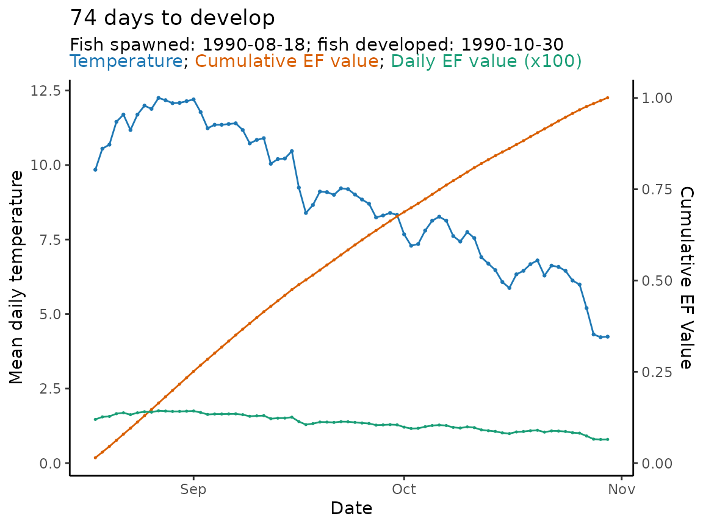

Predict fish phenology: basic
Morgan Sparks, Bryan M. Maitland
Source:vignettes/Predict_phenology_basic.Rmd
Predict_phenology_basic.RmdOverview
Now that we’ve checked and pre-processed our data, and know how to select model parameterizations, we’re ready to predict the developmental phenology of the fish species we’re interested in.
To demonstrate the full workflow for hatchR, we will
recreate part of the analysis from Sparks et al.
(2019) and use data from Woody Island from Lake Iliamna, Alaska.
The data comes installed with the package and is called
woody_island. First, we load packages:
Data checks
First, let’s check the data to make sure it’s in the right format.
We’ll use head() to print the first few rows and
summary() to get a sense of the data:
# print data
head(woody_island)
#> # A tibble: 6 × 2
#> date temp_c
#> <date> <dbl>
#> 1 1990-08-11 25.8
#> 2 1990-08-12 23.3
#> 3 1990-08-13 18.5
#> 4 1990-08-14 15.4
#> 5 1990-08-15 14.0
#> 6 1990-08-16 11.4
#summarize data
summary(woody_island)
#> date temp_c
#> Min. :1990-08-11 Min. :-9.900
#> 1st Qu.:1991-02-10 1st Qu.: 1.733
#> Median :1991-08-13 Median : 4.442
#> Mean :1991-08-13 Mean : 5.272
#> 3rd Qu.:1992-02-12 3rd Qu.: 7.767
#> Max. :1992-08-14 Max. :28.700
#> NA's :4 NA's :4You can see that each day already is summarized as a mean
temperature. You can also see that the data spans multiple years. We’ll
use plot_check_temp() to make visually check the data:
plot_check_temp(
data = woody_island,
dates = date,
temperature = temp_c
)There appear to be outliers in the data, specifically in the very beginning and end of the period of record, and right in the middle. The loggers look to have been recording observations outside of the water and then in the middle where the water level may have dropped and exposed it to the air.
However, spawning in this system typically peaks around August 18 and
hatching and emergence are done before the start of the following
spawning season, so we can predict phenology within a subset of a year.
Becuase plot_check_temp() is a ggplot object, we can add
geoms to the plot to represent the approximate phenology window:
p <- plot_check_temp(
data = woody_island,
dates = date,
temperature = temp_c
) +
labs(title = "Temperature data from Woody Island, Lake Iliamna, Alaska")
p +
geom_rect(
aes(
xmin = ymd("1990-08-18"), # spawn date
xmax = ymd("1991-04-01"), # approx phenology window end
ymin = -10, # lower bound
ymax = 25), # upper bound
fill = "darkgreen", # color rectangle dark green
alpha = 0.01 # make rectangle semi-transparent
) If we just apply the model within the green polygon we’ve drawn, the model should work just fine.
Model select
Now that our temperature data is usable we can select our models.
We’ll predict both hatching and emergence, so we will obtain a model
expression for each using model_select(). The only argument
in model_select() that must be changed in this case is
dev.type, which can be either “hatch” or “emerge”.
sockeye_hatch_mod <- model_select(
author = "Beacham and Murray 1990",
species = "sockeye",
model = 2,
dev.type = "hatch"
)
sockeye_emerge_mod <- model_select(
author = "Beacham and Murray 1990",
species = "sockeye",
model = 2,
dev.type = "emerge"
)Let’s look at the expressions for the two different models we’ve selected:
sockeye_hatch_mod ; sockeye_emerge_mod
#> expression(1/exp(6.727 - log(x + 2.394)))
#> expression(1/exp(7.227 - log(x + 2.56)))You can see they are parameterized slightly differently to account for the differences between hatch and emergence timing.
Predict phenology
We can now use our model expressions to predict when sockeye would
hatch and emerge at Woody Island in 1990. First we predict hatch timing
using predict_phenology():
WI_hatch <- predict_phenology(
data = woody_island,
dates = date,
temperature = temp_c,
spawn.date = "1990-08-18",
model = sockeye_hatch_mod
)And then look inside the returned object (see (sec-results?) for additional context) to see days to hatch and development period:
WI_hatch$days2done
#> [1] 74
WI_hatch$dev.period
#> start stop
#> 1 1990-08-18 1990-10-30We can also do the same with emergence:
WI_emerge <- predict_phenology(
data = woody_island,
dates = date,
temperature = temp_c,
spawn.date = "1990-08-18",
model = sockeye_emerge_mod # notice we're using emerge model expression here
)
# see days to hatch and development period
WI_emerge$days2done
#> [1] 204
WI_emerge$dev.period
#> start stop
#> 1 1990-08-18 1991-03-09Understanding your results
The output from predict_phenology() includes a lot of
information.
If we look at our WI_hatch object we see there are
multiple elements stored in a list which can be accessed using the
$ operator.
str(WI_hatch)
#> List of 4
#> $ days2done : int 74
#> $ dev.period:'data.frame': 1 obs. of 2 variables:
#> ..$ start: Date[1:1], format: "1990-08-18"
#> ..$ stop : Date[1:1], format: "1990-10-30"
#> $ ef.vals : num [1:74] 0.0147 0.0155 0.0157 0.0166 0.0169 ...
#> $ ef.tibble : spc_tbl_ [74 × 4] (S3: spec_tbl_df/tbl_df/tbl/data.frame)
#> ..$ dates : Date[1:74], format: "1990-08-18" "1990-08-19" ...
#> ..$ temperature: num [1:74] 9.84 10.55 10.68 11.45 11.69 ...
#> ..$ ef_vals : num [1:74] 0.0147 0.0155 0.0157 0.0166 0.0169 ...
#> ..$ ef_cumsum : num [1:74] 0.0147 0.0302 0.0458 0.0624 0.0793 ...
#> ..- attr(*, "spec")=List of 3
#> .. ..$ cols :List of 2
#> .. .. ..$ date : list()
#> .. .. .. ..- attr(*, "class")= chr [1:2] "collector_character" "collector"
#> .. .. ..$ temp_c: list()
#> .. .. .. ..- attr(*, "class")= chr [1:2] "collector_double" "collector"
#> .. ..$ default: list()
#> .. .. ..- attr(*, "class")= chr [1:2] "collector_guess" "collector"
#> .. ..$ delim : chr ","
#> .. ..- attr(*, "class")= chr "col_spec"
#> ..- attr(*, "problems")=<externalptr>WI_hatch$days2done outputs the predicted days to hatch
or emerge.
WI_hatch$dev.period is a 1x2 dataframe with the dates
corresponding to when your fish’s parent spawned (which you input with
predict_phenology(spawn.date = ...)) and the date when the
fish is predicted to hatch or emerge.
WI_hatch$ef.vals is a vector of each day’s effective
value as evaluated using whatever model is chosen.
WI_hatch$ef.tibble is a n x 4 tibble
(n = number of days to hatch or emerge) and the columns are the
date, each day’s temperature and effective value, and the cumulative sum
of the effective values. The ef.tibble object is meant to
serve as the basis for users to make custom figures for their data
beyond the functionality we discuss below.
Plotting phenology
hatchR has a built in function,
plot_phenology(), that allows users to visualize their
phenology results. The plot visualizes three specific components:
- the temperature regime over which you are predicting
- the cumulative sum of effective values
- the effective value for each day in your prediction span
The function allows you to output various figures based on your interests, but defaults to a figure with all information and lots of labeling.
In the output of plot_phenology() the cumulative
effective values are scaled by the warmest temperature in
ef.tibble and the daily effective values are
scaled by multiplying by 100 so everything is visibly congruent in the
figure.
Let’s look at the basic call, which gives you all the information:
plot_phenology(WI_hatch)
You can turn of labeling or plot specific values using the function
arguments style and labels, for example (plots
not rendered):
plot_phenology(WI_hatch,
style = "ef_cumsum") # shows a plot with just the ef cumulative sum values
plot_phenology(WI_hatch,
style = "ef_daily") # shows a plot with just the ef daily values
plot_phenology(WI_hatch,
labels = FALSE) # turns off the labeling for a cleaner figureA note about negative temperatures
Occasionally, temperature data sets will have a few negative values
or values very close to 0. Negative numbers below a certain threshold
will output “not a number” (NaN) effective values because
they are undefined in the model expression. Similarly, even negative
values above that threshold will produce very small effective values.
Because these values are so small, we allow the model to accumulate them
even though development below 0 is biologically unlikely. We
assume your data set has been checked for these values
and doesn’t include long periods of freezing, however the model allows
for the occasional dip below freezing because the effect is so
negligible toward development over incubation.
A toy example of this phenomenon is shown below.
# vector of temps from -5 to 15 by 0.5
x <- seq(from = -5, to = 15, by = 0.5)
x
#> [1] -5.0 -4.5 -4.0 -3.5 -3.0 -2.5 -2.0 -1.5 -1.0 -0.5 0.0 0.5 1.0 1.5 2.0
#> [16] 2.5 3.0 3.5 4.0 4.5 5.0 5.5 6.0 6.5 7.0 7.5 8.0 8.5 9.0 9.5
#> [31] 10.0 10.5 11.0 11.5 12.0 12.5 13.0 13.5 14.0 14.5 15.0
# get effective values for those temperatures
# You can see the NaN warning that shows up in our past applications
demo_ef_vals <- eval(sockeye_hatch_mod)
demo_ef_vals
#> [1] NaN NaN NaN NaN NaN NaN
#> [7] 0.000472060 0.001071121 0.001670182 0.002269243 0.002868304 0.003467365
#> [13] 0.004066426 0.004665487 0.005264548 0.005863609 0.006462670 0.007061731
#> [19] 0.007660792 0.008259853 0.008858914 0.009457975 0.010057036 0.010656097
#> [25] 0.011255157 0.011854218 0.012453279 0.013052340 0.013651401 0.014250462
#> [31] 0.014849523 0.015448584 0.016047645 0.016646706 0.017245767 0.017844828
#> [37] 0.018443889 0.019042950 0.019642011 0.020241072 0.020840133
# bring together as a tibble
demo <- tibble(x, demo_ef_vals)
demo
#> # A tibble: 41 × 2
#> x demo_ef_vals
#> <dbl> <dbl>
#> 1 -5 NaN
#> 2 -4.5 NaN
#> 3 -4 NaN
#> 4 -3.5 NaN
#> 5 -3 NaN
#> 6 -2.5 NaN
#> 7 -2 0.000472
#> 8 -1.5 0.00107
#> 9 -1 0.00167
#> 10 -0.5 0.00227
#> # ℹ 31 more rows
# plot (note NaNs are removed from figure)
# rectangle added to highlight the approximate temperatures of interest
demo |>
ggplot(aes(x = x, y = demo_ef_vals)) +
geom_rect(aes(ymin = 0, ymax = 0.005,
xmin = -5, xmax = 2),
fill = "dodgerblue", alpha = 0.25) +
geom_point() +
geom_line() +
labs(x = "Temperature (C)", y = "Effective Value") +
theme_classic()References
:::::::